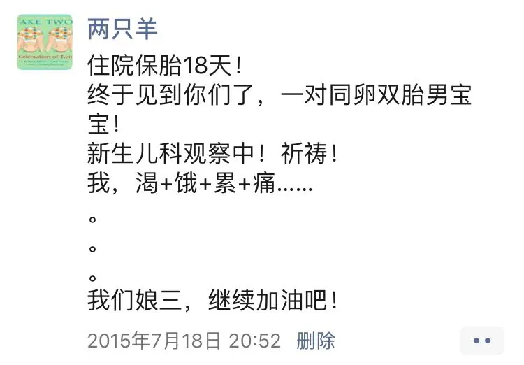
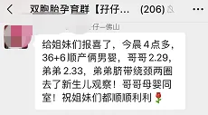
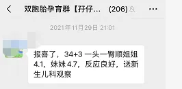
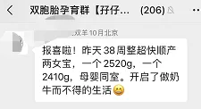
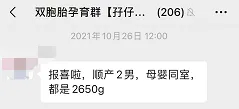
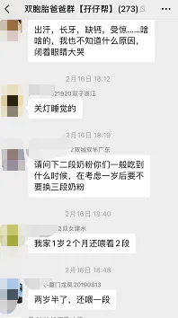

孖仔帮
公众号ID：twinsbang
关注
文|圆圈妈妈
网图|侵删
1
今天是居家隔离的第23天，圆圈兄弟上网课的第10天，我终于鼓起了勇气，拨通了街道办疫情防控指挥部的心理咨询热线电话。
我说：医生，我头痛晕眩，肩膀酸痛，视野模糊，呼吸不畅，易怒暴躁，容易受惊，惯性紧张，好担心是不是中招了。
医生问，家里有娃吗？
我说：有，两个，在上网课。
医生说：没事，这不是新冠肺炎，而是小孩在家。
我说：医生，救救我吧，解封之日，遥遥无期，我已成疯，指日可待。
医生说：那就别管娃，去做一些平时想去做但是没有时间去做的事情吧。
好，那就不管娃了，我煲剧去！
2
实不相瞒，我有6年多没看过电视连续剧了，距离上次煲剧还是在遥远的2015年，当时我还在留医部保胎，一边打硫酸镁一边看热播剧《花千骨》。
重新追剧的感觉，挺陌生的，因为看不懂啊，不知道是自己退化了，还是编剧过时了，发现现在的电视剧都很水，剧情雷人，画面狗血。
比如热播中的家庭婚姻情感剧《婚姻的两种猜想》，我挑这部剧，纯粹是看剧情介绍女主生了对双胞胎，还以为可以讨点带娃经验，这一看，真是漫山遍野的雷点扑面而来。
槽点1：
#男主得知女主怀的是双胞胎，激动得到处在办公室宣传，恨不得让全世界都知道他马上要升级双胞胎奶爸了。
现实生活，这种老公是会被老婆犀利的眼神活活社死的。
据不完全统计，很多妈妈怀了双胞胎之后都会刻意隐瞒怀双胎的事实，直到两孩子出生了，才敢告诉亲朋好友。
《你羡慕的双胞胎家庭实际长这样》
这是种什么心态呢？可能各有各的苦衷吧。
我怀双胞胎时，整个孕期都像在做贼似的，藏着掖着不敢告诉好友同事，也勒令圆圈爸不要到处说，等生完后，下了手术台，确定俩娃平安出生后才敢在朋友圈官宣。

我直到现在也说不出这是种什么心理在作祟，我只觉得怀双胞胎像得了重病一样，越少人知道，我就会感觉轻松点，背负着的期待就少很多。
槽点2：
#破羊水时，女主竟然一人在家，老公还搞失联，连老妈和婆婆都忙着闹跳楼，最后是闺蜜的老公给送医院的。
这为了博眼球提高收视率真够拼的，也太不尊重现实了。
现实生活中，到了孕后期，不可能只留一个孕妇在家里，而且还是个双胎孕妇，高危妊娠待产妇，随时都有可能发动，必须有人全程陪着。
女主的闺蜜倒说了句常识：家有孕后期的双胎孕妇，必须24小时待命。
的确，双胎妊娠越到后期，风险高，变数大，出现并发症的几率就越凶险，也许上一秒还好端端的，下一秒就突然腹痛难忍，昏过去了...
庆幸我怀孕时，身边有一位体贴入微，尽心尽力的婆婆在照顾着我。
28周，我就休产假老老实实地待在家，被婆婆当太上皇一样供着；33周，吃着饭时感觉肚子发紧发硬，还没等我反应过来就被五花大绑地拖去急诊。
还好只是假性宫缩，打了3天硫酸镁就让出院了，但是为了万无一失，婆婆建议在医院保胎住到生，一日三餐她和小姑子轮流送，寸步不离地陪着我，晚上再换圆圈爸守夜，坚持了18天，一直到生。
真的，家有双胞胎孕妇，所有人都严阵以待，24小时待命。
槽点3：
#女主想试顺产双胞胎，但胎儿脐带绕颈，胎位还不正，羊水都快流光了，才开两指，最后不得不顺转剖，还产后大出血。
我敬女主是条好汉，勇气可嘉，但是过于冒险，不提倡。
现实生活中，对于双胎妊娠的孕妇，绝大多数医院都会建议剖宫产，因为这样更安全些。
我看弹幕上一网友的吐槽真是简单粗暴：双胞胎试什么顺产，有毛病啊，我们这边双胞胎都是大夫择日剖腹产，不会等到39周40周。
我们深圳这边的医院比较佛，不会一刀切，会根据孕产妇的情况选择最佳分娩方案，只是我最后怂了而已。
从B超查出双胞胎那一刻开始，我就决定要剖腹产，生的时候两孩子的胎位很好，都是双头位，自身条件也不错，关键是我还没感觉到疼痛就已经默默地开了2指，医生也鼓励我试一下顺产，还给我打包票说，第一个孩子一定可以顺下来，可是我还是果断拒绝了。
一路胆战心惊，过关斩将地闯过来了，真的太累了，到最后关头，实在没有勇气和信心去冒这个险，只想速战速决，一剖了之。
难道双胞胎都没有顺产的吗？
有的，我们孖仔帮双胞胎孕育群偶尔会冒出顺产双胞胎的报喜，妥妥的正能量。




✦✦
我们的往期推文也有妈妈来稿分享顺产双胞胎的经历，
《顺产！龙凤胎！都不用进保温箱！这牛逼够我吹一辈子！》
《耗时5天，我的喜剧式双胞胎顺产经历》
槽点4：
#女主生产时，男主为了忙工作电话都不接，面对众人的指责时还说了句：“我哪知道今天生。”
感觉这个台词太燃了，难道就不怕妈妈们给编剧寄刀片吗？
导演可能是想通过这么一段戏码表现男主变坏了很渣，但是这种表现形式是不是有过分丑化新手奶爸的嫌疑？
虽然现实生活中不靠谱的爸爸确有很多，但优秀给力的爸爸也不少啊。
比如视频中这一位哥们，产房外的他跪在地板看门缝的样子真爷们。
还有，我们孖仔帮双胞胎爸爸群，273号新生代奶爸，白天工作狂，晚上铲屎官。
为了成为妈妈们的好帮手，爸爸们无师自通，熟知各种宝宝粪便，一看一闻就能判断娃积食了；深谙各大母婴平台的优惠玩法，总能蹲点抢到物美价廉的母婴用品；精通各种启蒙早教的雷区套路，不花冤枉钱也能高质量陪娃。

【爸爸就是甩手掌柜】，【爸爸就是搅屎棍】..早已是过去式了，得益于很多育儿文章对爸爸们或褒或贬的高度关注，现在已经有一大波爸爸们正朝着“热爱带娃”的方向不断进化了。
3
这剧前两天大结局，太水了，真是看了个寂寞，还指望着能治愈我临近崩溃的心情，倒搞得自己满脑子问号。
这剧到底是要表达什么意思？婚姻的两种猜想，到底是哪两种？凭我6年的双胞胎妈妈经验，我猜是以下这两种：
男主和女主最终扯了离婚证，这是在告诉我：看吧，家有双胞胎，离婚率普遍高。
可是镜头一转，男主和女主最后都看着对方笑了，这是在告诉我：且慢，离了婚双胞胎归谁？一人一个不好吧，为了两孩子，那就别离了，还是一起吧！
今日互动话题
#双胞胎家庭离婚率很高吗？#
评论区聊一聊呗！
微信公众号：孖仔帮
ID : twinsbang
专注双胞胎孕育，养育，教育经验分享
扫码关注我们
点一下你会更好看耶